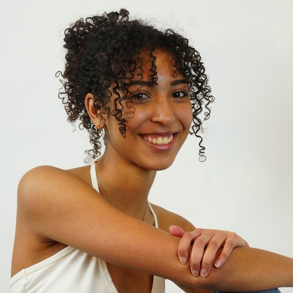

Orbital Decay in Hot Jupiters [model, python, mcmc]
A multi-year independent study testing for period decay in Hot Jupiter systems using self-collected transit observations. Concluded with a 20-minute presentation on methodology and findings.

I'm an incoming student at UC Berkeley, with a background in peer instruction, astrophysics research, and editorial leadership.
This fall I am beginning my undergraduate studies at UC Berkeley (Class of 2030), after graduating from The Thacher School with a 3.98 unweighted GPA.
Since 2020 I have worked in peer instruction and academic mentorship. As Head Tutor at Cope Middle School and The Thacher School, I train and supervise a team of 63 tutors serving approximately 250 students in mathematics, physics, and writing.
My research examines orbital decay in Hot Jupiters. Over a multi-year independent study, I collected observational data at an on-campus observatory and analyzed it using Python and Markov chain Monte Carlo methods.
I have also served as Editor-in-Chief of The Thacher Notes, as a Dormitory Prefect, and as Dance Captain at Salt Dance Studio. Outside of academics, I ride Western-style and perform with the Thacher Dance Ensemble.
Orbital Decay in Hot Jupiters [model, python, mcmc]
A multi-year independent study testing for period decay in Hot Jupiter systems using self-collected transit observations. Concluded with a 20-minute presentation on methodology and findings.
Head Tutor · Cope Middle School & The Thacher School
Train and supervise 63 tutors, coordinating with faculty to deliver support in mathematics, physics, and writing to approximately 250 students. Support elementary school teachers with classroom instruction. Students reported grade improvements in mathematics from Cs to As.
Astronomy Researcher & Intern · The Thacher School
Investigated orbital decay in Hot Jupiters using data from an operational on-campus observatory, applying Python and MCMC chains for analysis. Collaborated with two fellow researchers across a multi-year independent study.
Editor-in-Chief (formerly Junior Editor) · The Thacher Notes
Lead weekly editorial meetings and oversee the full publication workflow. Launched a social media platform and writer curriculum to broaden student engagement with journalism. Coach student writers through revision.
Dormitory Prefect · The Thacher School
Selected by faculty to mentor six sophomore students, plan residential events, and resolve day-to-day dormitory issues in partnership with the faculty head.
Dance Captain · Salt Dance Studio & The Thacher School
Choreograph and perform original pieces across West African, modern, contemporary, jazz, and ballet styles in ten showcases per year. Direct rehearsals for up to 15 dancers.
Volunteer · LANGO Foreign Language Camp
Supported language and culture instruction for children ages 3–10 through crafts, games, and song.
Group Leader & Games Leader · Vacation Bible School, Redlands
Supervised 2nd and 3rd grade campers across three-hour daily sessions and ran the all-camp game station; contributed to camp setup and takedown logistics.
University of California, Berkeley
Incoming Student
The Thacher School
GPA: 3.98 Unweighted / 4.68 Weighted
Enrichment programs
Memberships & athletics